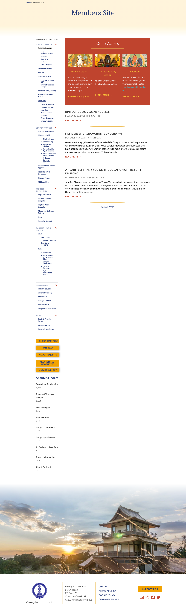
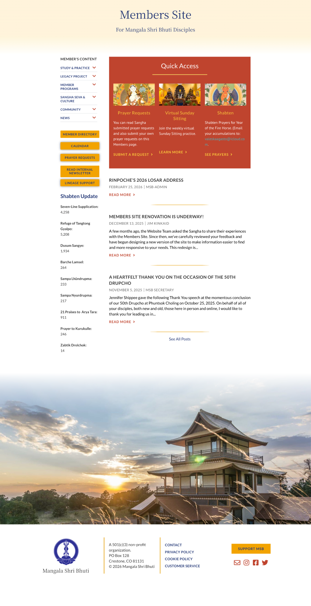
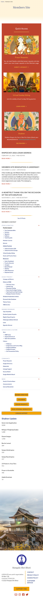
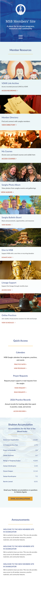
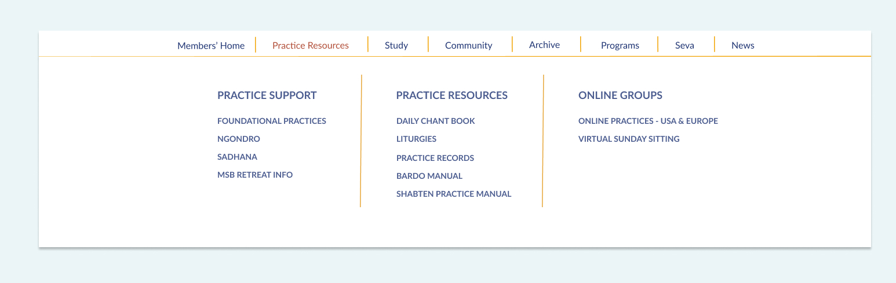
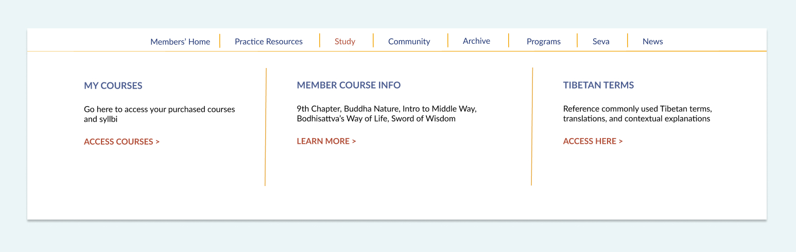
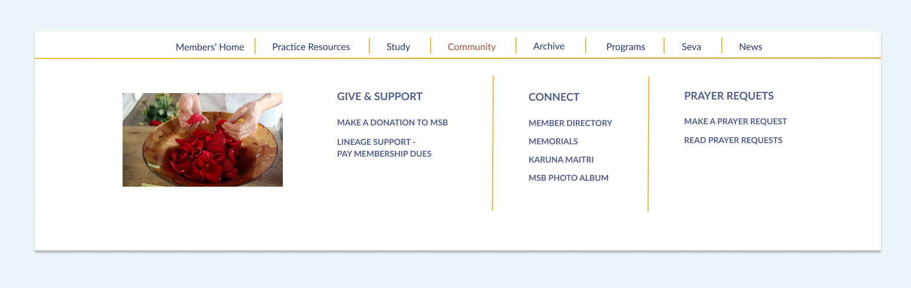
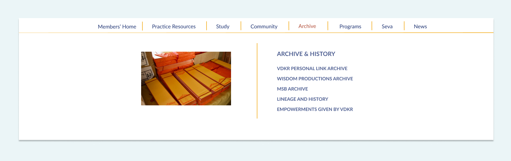
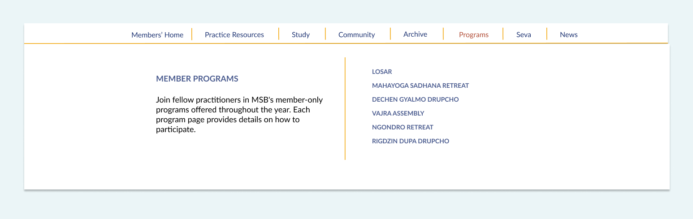
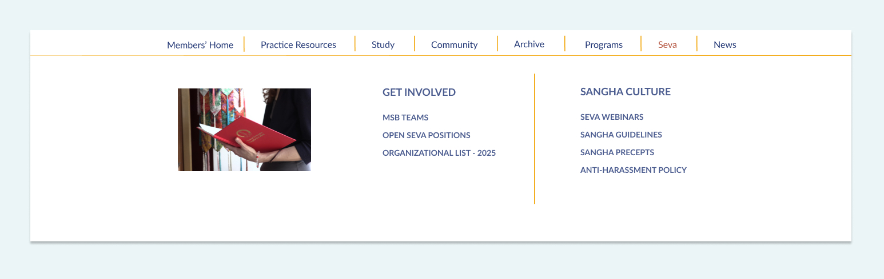

Before

↕ Scroll to explore
After

↕ Scroll to explore
Fig 05. Homepage before and after: sidebar navigation replaced with quick-access cards and mega menu
Case Study · 04 · Nonprofit
The members' site had a navigation problem everyone already knew about. My job was to fix it. I surveyed 53 members, redesigned the full homepage, reorganized 35 pages of content into a focused mega menu, and brought the community's most-needed resources to the surface. The site launched in Q1 2026 and is in production.
01
The Challenge
The members' site had a collapsible sidebar with six sections and dozens of nested links. Members were visiting regularly. Survey data showed 84.9% came for Study and Practice materials. But finding anything required effort. The search function consistently failed. Course materials were buried. The structure was getting in the way of people who already knew what they were looking for.
Original Site

Fig 01. Original members' site: six collapsing sidebar sections with dozens of nested links
02
Research & Discovery
I conducted a member survey reaching 522 people with a 10.1% response rate: 53 members. The data was consistent. Study materials drove visits (84.9%), followed by Member Programs (75.5%) and Member Directory (45.3%). When asked what frustrated them, members cited navigation, search failures, and buried content.
When asked for improvements, navigation and table of contents appeared repeatedly. Members wanted faster access to the resources they already valued.
Ease of Finding Information
Fig 02. How members rated their ability to find information on the site
Top Frustrations by Members
Fig 03. Primary frustrations reported in the member survey
The survey asked members directly what brought them to the site. Three categories accounted for the majority of visits, and none were easy to find in the existing sidebar structure.
84.9%
The clear majority of visits were for practice support: liturgies, instructions, online sessions, and course materials. These were buried three levels deep in collapsing sidebar menus.
75.5%
Program information, registration, and schedules were the second most-visited category. Members had to know exactly where to look. Discoverability was near zero for anyone new to the site.
45.3%
Nearly half of members visited for the directory, one of the most consistently hard-to-find pages. It appeared in a collapsed sidebar section with no homepage shortcut.
03
Design Strategy
The survey made three things clear. Navigation needed a complete rethink. The most-used resources needed to be on the homepage, not buried in menus. And the site needed to feel like it belonged to the members who used it.
The mega menu reorganized 35 pages into 7 categories based on why members visit: Practice Resources, Study, Community, Archive, Programs, Seva, and News. The sidebar was gone.
The homepage got a dedicated resources section with direct links to the Calendar, Prayer Requests, and submitting personal practice records. These had all been buried and were among the most frequently needed pages. Bringing them to the surface changed how the site felt to use.
The visual design brought in photographs of members and Buddhist iconography throughout. The previous site had felt generic and institutional. The redesigned site feels like it belongs to the people who use it.
AI-Assisted Research Synthesis
I used Claude to synthesize the qualitative survey responses. What would have taken hours of manual review took minutes. The synthesis helped me see something that shaped the whole project: some members couldn't find the menu item they needed, while others found the menu item but couldn't locate the content. Two different frustrations. That is why the solution needed more than one part.
Constraint
The WordPress theme wasn't changing. That was fine. It meant the work had to live in the information architecture, the homepage design, and the visual direction. Which is where the real problems were anyway.
Homepage
A dedicated resources section on the homepage gave members direct access to the Calendar, Prayer Requests, practice record submission, and other high-frequency pages. No navigation required. These had all been buried in the sidebar. Moving them to the homepage was one of the most impactful changes in the project.
Mega Menu
35 pages reorganized into 7 categories, each one mapped to why members visit rather than how the content was structured internally. Practice Resources, Study, Community, Archive, Programs, Seva, News.
Visual Design
Adding photographs of members and Buddhist iconography throughout the site changed how it felt. The previous design had been functional but cold. Members are visiting a site that supports their practice and their community. It should feel that way.
Before

After

Fig 04. Mobile — original site (left) and redesigned homepage (right)
Before

After
Fig 05. Homepage before and after: sidebar navigation replaced with quick-access cards and mega menu
04
Design Execution
I started with wireframes in Google Slides to move through the structural decisions before going into Figma for high-fidelity mockups. Once the architecture felt settled I worked through each mega menu section in detail. I paid attention to the button labels throughout. VIEW for browsing, ACCESS for gated content, DONATE for transactions. Consistent labeling made each section more scannable and reduced the cognitive load that had been frustrating members.
Version 01
The first version grouped all study and practice content into one mega menu column. It was too much. Stakeholders flagged it and they were right. There was no clear hierarchy and the section felt hard to navigate.
Revision
Separating them into Courses and Practice Resources made the distinction clear. Courses for structured learning, Practice Resources for daily and ritual materials. It was easier to read and easier to use. I revised without hesitation.
Removing the sidebar was already agreed. The harder question was what to replace it with. With 35 pages of content and members visiting for a wide range of reasons, the challenge was how to surface what mattered without making everything else harder to find. The mega menu handled the depth. The homepage cards handled the frequency. Together they gave members two ways in depending on what they needed.







Fig 06. Desktop mega menu — 7 categories organized by member intent. Tap arrows to explore each section.
Fig 07. MSB Members' site homepage final design
05
Outcomes
The designs were completed and handed off to a WordPress developer for implementation. The project worked within the existing WordPress theme structure, which kept the development scope focused. Once live, the homepage resources section will bring the most-needed pages to the surface and the mega menu will make the full site findable for the first time.
Reflection
Using Claude to synthesize the survey data meant I could spend my time on the design decisions rather than sorting through qualitative responses. That freed up energy for the parts of the project that needed my judgment.
The pivot from one mega menu section to two came from stakeholder feedback after the first round of mockups. They were right to flag it. Revising without resistance built trust that carried through the rest of the project.
If I did this again I would test the mega menu with members before finalizing. Stakeholder feedback was useful but watching someone try to find what they need tells you something different. User testing would have validated the category names against real mental models and might have caught naming issues before the site went live.